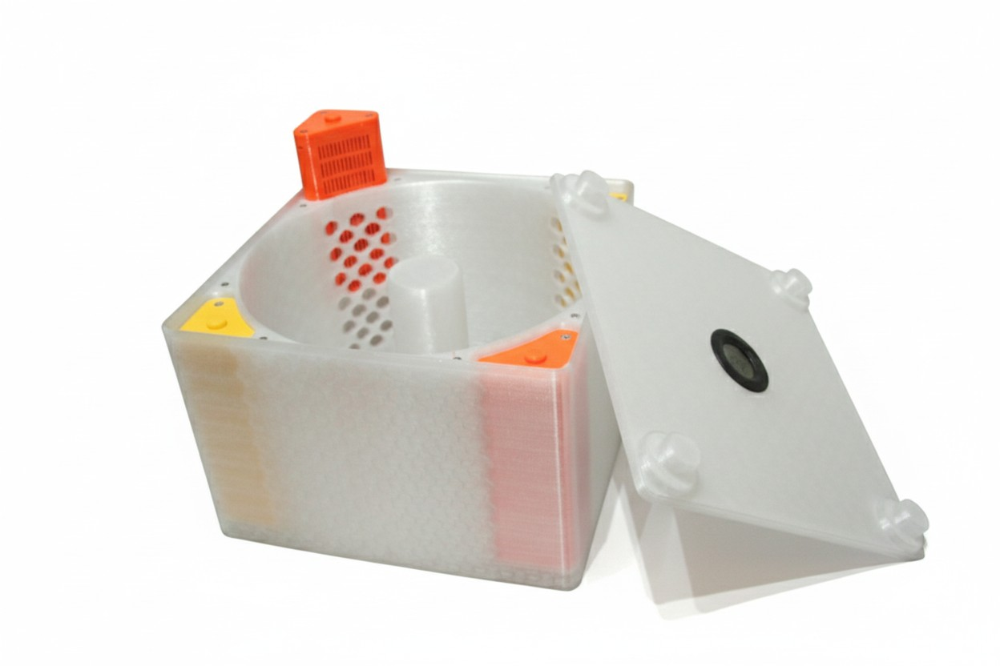
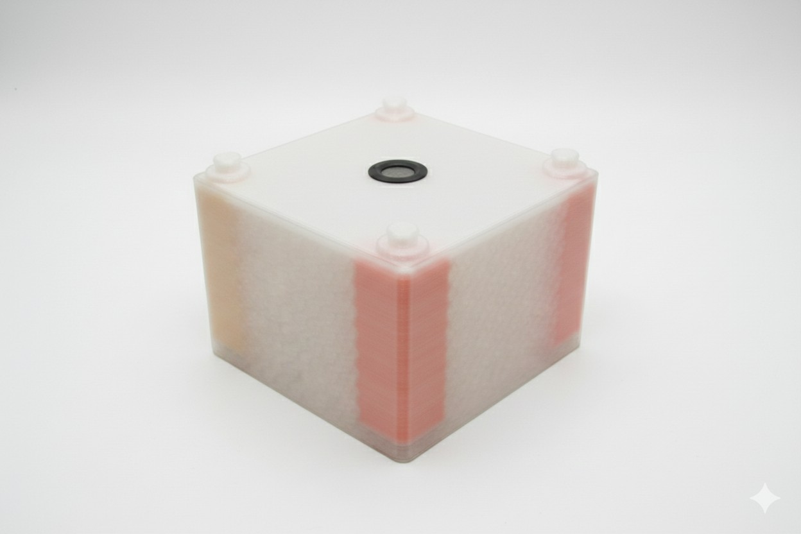
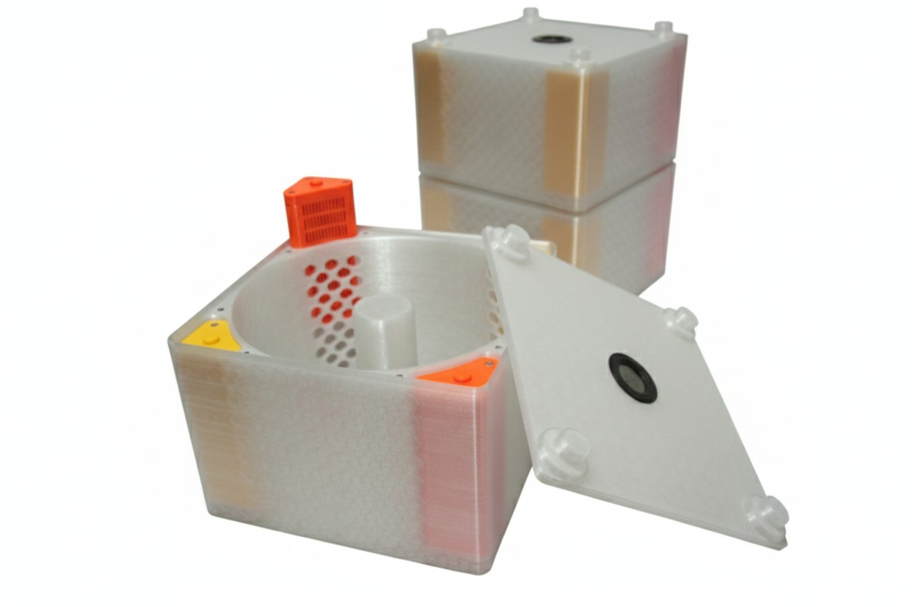

Photo Gallery





Storing 3D printing filament presents a constant challenge: moisture absorption degrades print quality, yet vacuum-sealing spools after every print becomes tedious. This drybox solves both problems by providing a controlled storage environment that maintains low humidity while allowing easy access to your filament.
The stackable design maximizes vertical space, letting you store multiple spools efficiently without sacrificing floor space. Built-in compartments hold silica gel desiccant to absorb moisture, while an optional hygrometer mounting allows real-time humidity monitoring. The magnetic closure system ensures an airtight seal while remaining easy to open when you need to swap filament.
| Material / Component | Quantity | Notes |
|---|---|---|
| PETG Filament (1kg spool) | ~1660g (~550m) | Strongly recommended - other materials not advised |
| Round Thermometer + Hygrometer | 1 pc | Optional but recommended for monitoring |
| Neodymium Magnets Ø5x3mm | 16 pcs | For magnetic closure system |
| M3x10mm Screws (ISO 14579 / DIN 912) | 12 pcs | Socket head cap screws |
| M3 Nuts (DIN 562) | 12 pcs | Square nuts |
| Silica Gel Desiccant | ~500ml | Rechargeable orange/blue indicating type recommended |
Download the STL files from Printables (link below). This is a large project with multiple components—review all parts before starting to ensure you have enough filament. The design prints without supports, so orientation in your slicer is straightforward.
Print settings:
Material: PETG (strongly recommended - PLA and other materials not advised due to moisture exposure)
Perimeters: 4 walls
Infill: 30%
Layer height: 0.25mm (higher layers also work)
Supports: None required
Print time: ~57 hours (total for all parts)
This is a time-intensive print. Plan accordingly and ensure your printer is properly calibrated for such a long job. PETG is essential here—its moisture resistance makes it ideal for a humidity-control application.
CRITICAL STEP: Before installing magnets, pair them together in opposing polarity. Hold two magnets so they attract each other, then mark one side with a marker. This ensures all magnets will be installed with correct polarity—mistakes here will cause the lid to repel instead of close securely.
Keep paired magnets together during installation. Test fit each magnet pocket to ensure they sit flush, then press magnets firmly into place. A small dab of superglue can help secure them permanently.
Install the M3 screws and nuts to attach structural components. Insert silica gel into the dedicated compartments—these pockets are precisely sized to hold standard desiccant packets or loose silica beads. If using a hygrometer, mount it in the designated slot where it's visible through the lid.
Test the magnetic closure before loading filament. The lid should seal securely with a satisfying click. Stack multiple dryboxes if you have several spools to store—the design includes alignment features for stable stacking.


This was one of my early designs, and achieving the right tolerances for the silica gel pockets proved challenging. Too tight and the packets won't fit; too loose and they rattle around. The final design required careful calibration to create pockets that hold desiccant securely while allowing easy replacement when the gel needs recharging.
Always keep magnet pairs connected during installation. This simple practice prevents costly mistakes—installing even one magnet with reversed polarity means either reprinting that component or carefully extracting and flipping the magnet (which rarely ends well). Mark paired magnets and work methodically through installation.
The stackable design transforms filament storage from a horizontal space hog into an efficient vertical system. Multiple boxes can be stacked reliably thanks to alignment features built into the design. This approach works particularly well if you maintain a diverse filament library.
Initial prototypes had silica gel compartments that were extremely difficult to load. The packets required excessive force to insert, risking damage to both the printed part and the desiccant packaging.
Multiple test prints refined the pocket dimensions until they achieved the right balance: secure retention without requiring excessive force. If printing with materials that shrink differently, users can scale the pockets by 101-102% in their slicer to compensate.
During assembly of the first prototype, several magnets were installed without checking polarity. The result was a lid that repelled certain sections of the base—completely defeating the magnetic closure system and requiring component reprints.
Developed a systematic pairing method: before installation, connect each magnet to its partner with correct polarity, mark one side, and keep pairs together throughout assembly. This prevents any chance of reversal and ensures consistent magnetic attraction across all closure points.